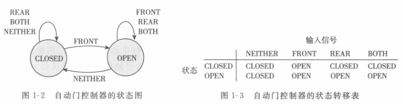
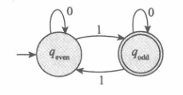
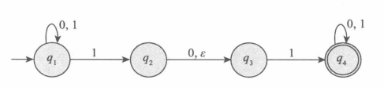
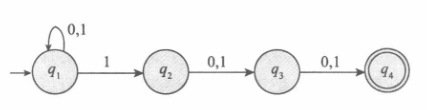
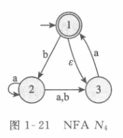
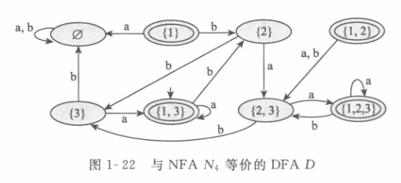
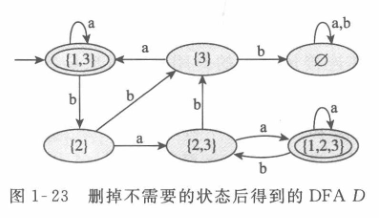
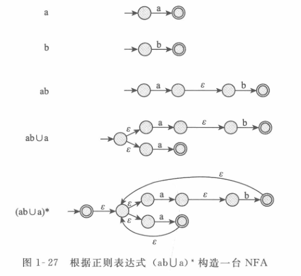
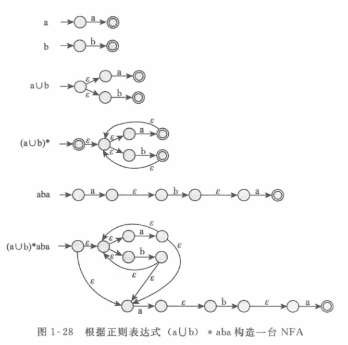

theory-计算理论导引1
目录
第 1 章 正则语言
将现实计算机中复杂难的问题直接建立易于处理的数学理论——引入计算模型
- 计算模型（Computational Model）
- 理想计算机
- 准绝地刻画了某些特征，同时忽略一些特征。因此，针对关注的特征，采用不同的计算模型。
- 最简单模型——自动机（Automation）
1.1 有穷自动机
- 什么是“有穷自动机”？
- 描述能力和资源及其有限的计算机模型。
- 从数学角度考虑“有穷自动机”
- 只做抽象的描述，不涉及任何具体的应用
- 接受输入：字符串
- 输出：是非型
- 如此有限，能做什么？
- 很多事情（机电设备核心部位）
自动门控制器实例:

控制器处于CLOSED状态，假设输入如下信号：FRONT，REAR，NEITHER，FRONT，BOTH，NEITHER，REAR，NEITHER，考虑状态的变化。
可以给出状态和信号之间的计算。

- $M_1$ 的状态图
- 起始状态(start state) $q_1$ 用一个指向它的无出发点的箭头表示。
- 接收状态(accept state) $q_2$ 带有双圈。
- 从一个状态指向另一个状态的箭头称为转移。
| 状态/信号 | 0 | 1 |
|---|---|---|
| $q_1$ | $q_1$ | $q_2$ |
| $q_2$ | $q_3$ | $q_2$ |
| $q_3$ | $q_2$ | $q_2$ |
- 当这个自动机接收到输入字符串，例如 1101 时，它处理这个字符串并产生一个输出。输出是接受或拒绝。
- 处理从 $M_1$ 的起始状态开始。自动机从左至右一个接一个地接受输入字符串的所有符号。
- 读到一个符号之后，$M_1$ 沿着标有该符号的转移从一个状态移动到另一个状态。
- 当读到最后一个符号时，$M_1$ 产生它的输出。
- 如果 $M_1$ 现在处于一个接受状态，则输出为接受；
- 否则输出为拒绝。
用 C 语言描述自动机：
|
自动机对应于只有 if，goto，无数组，无内部变量的程序；
程序不如图形直观。
1.1.1 有穷自动机的形式化定义
- 有穷自动机是一个 5 元组（$Q,\Sigma,\delta,q_0,F$）（状字转起接），其中
- $Q$ 是一个有穷集合，称为状态集。
- $\Sigma$ 是一个有穷集合，称为字母表。
- $\delta:Q\times \Sigma\to Q$ 是转移函数。
- $q_0\in Q$ 是起始状态。
- $F\subseteq Q$ 是接收状态集。
可以把 $M_1$ 形式地写成 $M_1=(Q,\Sigma,\delta,q_1,F)$，其中
1.$Q=\{q_1,q_2,q_3\}$
2.$\Sigma=\{0,1\}$
3.$\delta$ 描述为:
| 状态/信号 | 0 | 1 |
|---|---|---|
| $q_1$ | $q_1$ | $q_2$ |
| $q_2$ | $q_3$ | $q_2$ |
| $q_3$ | $q_2$ | $q_2$ |
4.$q_1$ 是起始状态。
5.$F=\{q_2\}$
1.1.2 有穷自动机举例
即，$M_1$ 可用形式化描述为 $M_1=(\{q_1,q_2\},\{0,1\},\delta,q_1,\{q_2\})$，转移函数 $\delta$ 为：
| 状态/信号 | 0 | 1 |
|---|---|---|
| $q_1$ | $q_1$ | $q_2$ |
| $q_2$ | $q_3$ | $q_2$ |
| $q_3$ | $q_2$ | $q_2$ |
形式化描述就是一个 5 元组。
若 $A$ 是机器 $M$ 接受的全部字符串集，则称 $A$ 是机器 $M$ 的语言，记作 $L(M)=A$，又称 $M$ 识别 $A$ 或 $M$ 接受 $A$。（把计算模型和语言结合到一起，而语言又可以与问题进行编码，因此就通过语言把计算模型和问题关联起来）
$L(M_1)=\{w|w至少一个1并且在最后的1后面有偶数个0\}$
1.1.3 计算的形式化定义
形式化定义能够清除在非形式化描述中可能出现的任何二义性。
设 $M=(Q,\Sigma,\delta,q_0,F)$ 是一台有穷自动机，$w=w_1 w_2 … w_n$ 是一个字符串并且其中任一 $w_i$ 是字母表 $\Sigma$ 的成员。如果存在 $Q$ 中的状态序列 $r_0,r_1,…,r_n$，满足下述条件：(为了解释自动机如何接受这个字符串)
- $r_0=q_0$ （起始状态吻合）
- $\delta(r_i,w_{i+1})=r_{i+1},i=0,…,n-1$ (转移函数吻合)
- $r_n\in F$ (接收状态吻合)
则 $M$ 接受 $w$。
如果 $A=\{w|M接受w\}$，则称 $M$ 识别语言 $A$。
如果一个语言被一台有穷自动机识别，则称它是正则语言（regular language）。
1.1.4 设计有穷自动机
例1：设计有穷自动机 $E_1$,假设字母表是 $\{0,1\}$，识别的语言由所有含有奇数个 1 的字符串组成。

例2：设计有穷自动机 $E_2$，使其能够识别含有 001 作为字串组成的正则语言。

1.1.5 正则运算
如果一个语言被一台有穷自动机识别，则称它是正则语言（regular language）。
定义：设 $A$ 和 $B$ 是两个语言，定义正则运算并、连接和星号：
设字母表 $\Sigma$ 是标准的 26 个字母 $\{a,b,…,z\}$。又设 $A=\{good,bad\}$，$B=\{boy,girl\}$，则：
$A\cup B=\{good,bad,boy,girl\}$，
$A\circ B=\{goodboy,goodgirl,badboy,badgirl\}$
$A^*=\{\varepsilon （表示空）,good, bad,goodgood,goodbad,badgood,badbad,goodgoodgood,…\}$
如果把某种运算应用于一个对象集合的成员得到的对象仍在这个集合中，则称这个对象集合在该运算下封闭。
正则语言类在并、连接、星号运算下封闭。
1.2 非确定性
有穷自动机（Finite Automata） FA
确定型有穷自动机（Deterministic Finite Automata） DFA
- 非确定型有穷自动机（NonDeterministic Finite Automata） NFA
证明定理遇到困难，暂时放下——引入不确定性。
- 确定性：机器处于给定状态并读入下一个输入符，可以知道机器的下一个状态是什么——确定的。
- 不确定性：任何一个点，下一个状态可能存在若干中选择。体现在：
- 转换规则——一入多出，
- $\varepsilon$ 是空字（当前状态（$q_2$）不稳定，不用读入输入，自动转到下一个状态（$q_3$））——无转入态。

设 $A$ 是 $\{0,1\}$ 上倒数第三个符号为 1 的所有字符串组成的语言，下图 NFA $N_2$ 识别 $A$。

让其停留在起始状态 $q_1$，直到它“猜想”它正好位于倒数第三的位置上。
1.2.1 非确定型有穷自动机的形式化定义
非确定型有穷自动机是一个 5 元组 $(Q,\Sigma,\delta,q_0,F)$，其中
- $Q$ 是有穷的状态集。
- $\Sigma$ 是有穷的字母表字母表。
- $\delta:Q\times{\color{red}\Sigma_\varepsilon}\to P(Q)$ 是转移函数（仅在转移函数上与 DFA 不同）。
- $q_0\in Q$ 是起始状态。
- $F\subseteq Q$ 是接收状态集。
$N_1$ 的形式化描述是 $(Q,\Sigma,\delta,q_1,F)$，其中
- $Q=\{q_1,q_2,q_3,q_4\}$;
- $\Sigma =\{0,1\}$;
- $\delta$ 由下表给出:
| 0 | 1 | $\varepsilon$ | |
|---|---|---|---|
| $q_1$ | $\{q_1\}$ | $\{q_1,q_2\}$ | $\varnothing$ |
| $q_2$ | $\{q_3\}$ | $\varnothing$ | $\{q_3\}$ |
| $q_3$ | $\varnothing$ | $\{q_4\}$ | $\varnothing$ |
| $q_4$ | $\{q_4\}$ | $\{q_4\}$ | $\varnothing$ |
- $q_1$ 是起始状态；
- $F=\{q_4\}$
1.2.2 NFA 与 DFA 的等价性
NFA $\Leftrightarrow $ DFA
每一台非确定型有穷自动机都等价（识别同样的语言）于某一台确定型有穷自动机。
一个语言是正则的，当且仅当有一台非确定型有穷自动机识别它。

为了消除 $\varepsilon$，额外构造状态：

删除不必要的状态：

- DFA 机器易算，NFA 人为制造，通常，人造 NFA，让机器把它变成 DFA。
- 当用并行技术去实现时实际上使用 NFA。
- 当对有指数个结点的树回溯和搜索 （可能这里广度优先比深度优先好），是用 DFA。
- 对应于 NFA 这样的简单并行程序中可以串行化。
1.2.3 在正则运算下的封闭性
正则语言类在并、连接、星号运算下封闭。
1.3 正则表达式
可以用正则运算符构造描述语言的表达式，称为正则表达式。
1.3.1 正则表达式的形式化定义
Python 正则表达式 | 菜鸟教程 (runoob.com)
称 $R$ 是一个正则表达式，如果 $R$ 是：
- $a$，这里 $a$ 是字母表 $\Sigma$ 中的一个元素；
- $\varepsilon$ ；(表示只包含一个字符串——空串的语言，而 $\varnothing$ 表示不包含任何字符串的语言)
- $\varnothing$；
（归纳定义）
- $R_1\cup R_2$ ，这里 $R_1$ 和 $R_2$ 是正则表达式；
- $(R_1\circ R_2)$，这里 $R_1$ 和 $R_2$ 是正则表达式；
- $(R_1^*)$，这里 $R_1$ 是正则表达式。
1.3.2 与用穷自动机的等价性


广义非确定型有穷自动机：GNFA
- 起始状态有射到其他每一个状态的箭头，但是没有从任何其他状态射入的箭头。（避免死循环）
- 有唯一的一个接收状态，并且它有从其他每一个状态射入的箭头，但是没有射到任何其他状态的箭头。此外，这个接收状态与起始状态不同。
- 除起始状态和接收状态外，每一个状态到自身和其他每一个状态都有一个箭头。
1.4 非正则语言
任何不能被正则表达式所定义的语言都是非正则语言(Nonregular languges)(无穷个可能)
关于正则语言的泵引理
泵引理是形式语言与自动机理论中判定一个语言不是正则语言的重要工具，下面介绍的是其通用的形式，除此之外还有其推广的强泵引理等。
语言中的所有字符串只要它的长度不小于某个特定值——泵长度，就可以被抽取。
——每一个这样的字符串都包括一段字串，把这段字串重复任意次，得到的字符串仍在这个语言中。
泵引理：若 $A$ 是一个正则语言，则存在一个数 $p$ （泵长度）使得，如果 $s$ 是 $A$ 中任一长度不小于 $p$ 的字符串，那么 $s$ 可以被分成 3 段， $s=xyz$，满足下述条件：（随便否定一个，就可以证明不是正则的）
- 对每一个 $i\ge 0, xy^iz\in A$ （$y^i$ 是 $i$ 个 $y$ 连接在一起，$y^0$ 等于 $\varepsilon$）
- $|y|>0$ （字符串 $y$ 的长度大于 0，换言之， $y\ne \varepsilon$）
- $|xy|\le p$（$x$ 和 $y$ 两端在一起的长度不超过 $p$）
我们总能够在离 $s$ 的开始处不太远的地方找到一个非空的串 $y$，然后可以把它看作一个“泵”，重复 $y$ 任意多次，或者去掉它，而所得到的结果串仍然属于 $A$。